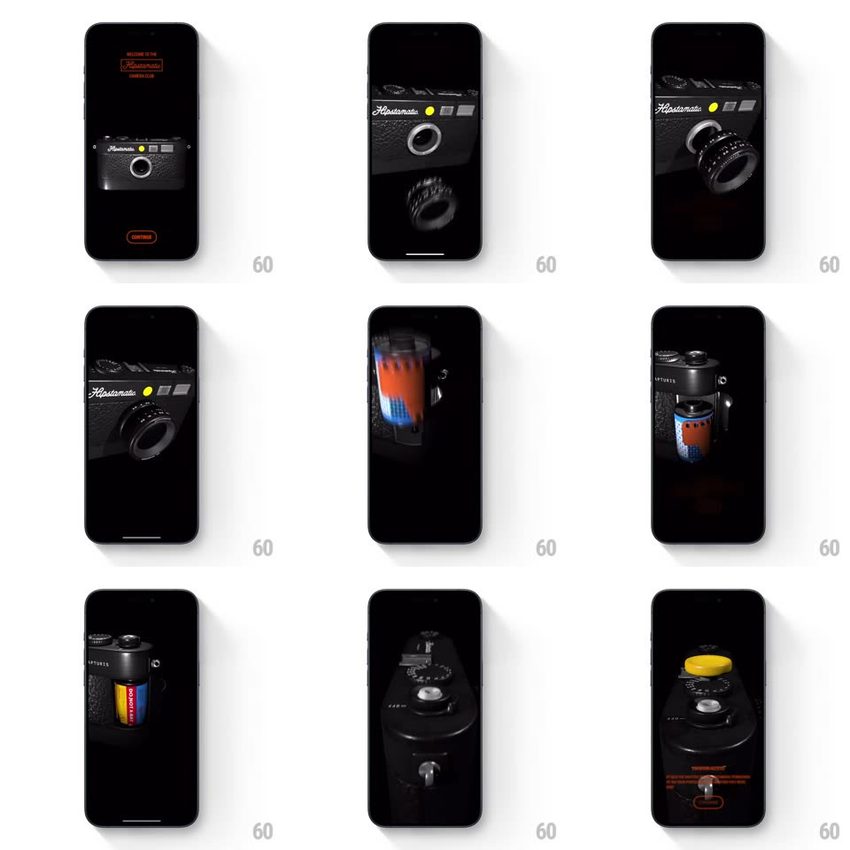

Media
Frame-by-frame

Rebuild this animation 1:1: Hipstamatic's permissions onboarding - a fully 3D skeuomorphic film camera assembles itself part by part on black, each stage representing a system permission (lens, film canister, shutter button), with orange retro type and a CONTINUE button under each.

Rebuild this animation 1:1: Hipstamatic's permissions onboarding - a fully 3D skeuomorphic film camera assembles itself part by part on black, each stage representing a system permission (lens, film canister, shutter button), with orange retro type and a CONTINUE button under each.
## Integration
Integration: stack-agnostic spec - springs given as stiffness/damping, timed motions as duration + curve; map every value to your framework and animation library of choice.
## Scene
Black stage: orange retro type ("WELCOME TO THE Hipstamatic CAMERA CLUB"), a 3D leather-and-metal rangefinder camera that builds itself - lens barrel screws on, film canister loads into the body, top plate and yellow shutter button attach. Each stage pairs with orange permission copy and an outlined CONTINUE pill.
## Motion spec
Pattern: staged 3D product assembly.
- Welcome: the complete camera fades in slowly (600ms), floating with a subtle idle sway (rotate ±2deg, 4s loop).
- Per stage: the camera rotates on its Y axis (~180deg, 900ms ease-in-out) to face the assembly point; the new part flies in from off-screen (translate + rotate, spring ~220/20, ~700ms) and seats with a tiny impact bounce (2px settle) plus a soft metallic tick.
- The lens screws on with a visible rotation (2 full turns, ease-out); the film canister drops in from above (gravity ease-in, then 1 bounce); the shutter button pops on with a spring (~400/18).
- Copy block crossfades per stage (300ms); CONTINUE pulses gently (opacity 0.7 -> 1, 1.5s loop).
- Lighting is a single soft key from upper-left; parts cast real-time shadows on the body.
## Calibration
- The camera never cuts between stages - rotation and assembly are continuous shots.
- Orange (#E8572A-ish) is the only accent against black and metal.
## Reduced motion
Stage crossfades between pre-assembled states, no flying parts.
## Don't miss
- The yellow shutter button and film-canister orange label are deliberate color pops.
- Each permission screen's copy sits low, leaving the camera the hero.